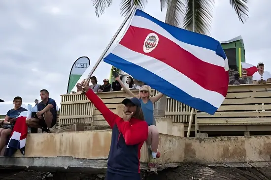

Le 1er février 2026, le Costa Rica a élu Laura Fernández Delgado à la présidence dès le premier tour, avec 48,5 % des suffrages. Héritière du populaire sortant Rodrigo Chaves et portée par une promesse de fermeté sécuritaire, cette victoire consacre une rupture historique pour un pays longtemps considéré comme le modèle démocratique d'Amérique centrale.
Le Costa Rica jouit d'une image internationale d'exception. Seul pays d'Amérique centrale sans armée depuis 1948, doté d'institutions démocratiques stables, d'un indice de développement humain parmi les plus élevés de la région et d'un engagement pionnier pour la biodiversité — plus de 25 % de son territoire est protégé — il fait figure de modèle dans un isthme marqué par l'instabilité.
Pourtant, à l'aube de l'élection de 2026, le pays est confronté à une crise sécuritaire sans précédent dans son histoire récente. L'essor du trafic de drogue, lié à la réorganisation des cartels mexicains et colombiens en Amérique centrale, a fait du Costa Rica un pays de transit stratégique. Le taux d'homicides a bondi de plus de 50 % depuis 2022, mettant à mal l'image de havre de paix du pays.
La présidence de Rodrigo Chaves Robles (2022–2026) a opéré une première rupture politique majeure. Outsider se présentant contre « le système », Chaves a bénéficié de résultats macroéconomiques favorables — baisse de l'inflation, excédent budgétaire primaire maintenu, croissance du PIB autour de 4 % en 2024 — mais a entretenu des relations conflictuelles avec les contre-pouvoirs.
Son gouvernement a mené des tensions répétées avec le Tribunal suprême électoral, les médias indépendants et le pouvoir judiciaire. En septembre 2025, le TSE a demandé la levée de l'immunité présidentielle pour permettre des poursuites judiciaires à son encontre. La Constitution lui interdisant de briguer un second mandat consécutif, Chaves a reporté son capital politique sur sa ministre Laura Fernández Delgado.
Élection de Rodrigo Chaves. Première victoire d'un outsider anti-système au Costa Rica. Début de la montée de la violence liée aux cartels.
La Constitution est amendée pour autoriser l'extradition de narcotrafiquants. Chaves propose un référendum sur des réformes clés (« loi Jaguar »). Popularité maintenue malgré les tensions institutionnelles.
Le Tribunal suprême électoral demande la levée de l'immunité présidentielle de Chaves. Lancement officiel de la campagne électorale.
Laura Fernández élue présidente dès le premier tour avec 48,5 % des voix. Le PPSO obtient 30 des 57 sièges de l'Assemblée législative.
Investiture de Fernández. Chaves nommé au gouvernement. Annonce des premières mesures sécuritaires et du chantier de la méga-prison.
La campagne de Laura Fernández a été quasi-exclusivement centrée sur la lutte contre l'insécurité. S'inspirant ouvertement du modèle de Nayib Bukele au Salvador — dont la politique de mégaprison et d'état d'urgence dans les zones contrôlées par les gangs a fait des émules en Amérique latine —, elle a promis de finaliser la construction d'une méga-prison calquée sur le CECOT salvadorien et de déclarer l'état d'urgence dans les zones gangstérisées.
Cette rhétorique sécuritaire s'est imposée dans un contexte de forte anxiété populaire. Avec un taux de participation en hausse à 69 %, l'élection a mobilisé un électorat en quête de résultats concrets, loin des arrangements institutionnels des partis historiques (PLN, PAC) réduits à un rôle marginal.
| Candidat | Parti | Score |
|---|---|---|
| Laura Fernández | PPSO | 48,5 % |
| Álvaro Ramos Chaves | PLN | 33,3 % |
| Autres candidats (×18) | — | < 5 % chacun |
La victoire du PPSO s'accompagne d'une recomposition profonde du paysage parlementaire. Avec 30 sièges sur 57, Fernández dispose d'une majorité relative confortable, inédite pour un exécutif qui avait souffert sous Chaves du fractionnement de l'Assemblée. Les partis historiques — le Parti de libération nationale (PLN) fondé en 1951 et le Parti d'action citoyenne (PAC) — sont relégués dans l'opposition.
La décision de nommer l'ancien président Rodrigo Chaves au gouvernement constitue un signal fort : la continuité politique est assumée, et le capital de popularité de Chaves (encore à 58 % d'approbation en janvier 2026) est mis au service du nouvel exécutif.
« Vous pouvez être sûrs que la sécurité restera l'une des principales priorités de ce gouvernement. »
— Laura Fernández Delgado, discours de victoire, 1er février 2026« J'ai voté pour elle parce que j'ai peur de sortir le soir dans mon quartier. Ce n'était pas le cas il y a cinq ans. »
— Carlos, commerçant de San José, 44 ans, février 2026Sur le plan économique, le Costa Rica affiche des fondamentaux solides : la croissance du PIB devrait avoisiner 3,6 % en 2026 selon l'OCDE, portée par les exportations de dispositifs médicaux et les services aux entreprises, qui ont supplanté le tourisme et l'agriculture comme premiers postes d'exportation. Les investissements directs étrangers restent à des niveaux élevés, attirés par la stabilité institutionnelle et la qualification de la main-d'œuvre.
Cependant, la croissance reste inégalement répartie. Les « zones franches » bénéficient de la dynamique exportatrice, mais l'économie domestique peine à en ressentir les effets. L'inflation, quasi-nulle fin 2025, devrait repartir légèrement à la hausse, et les inégalités sociales demeurent un défi structurel sous-jacent à la crise sécuritaire.
La victoire de Laura Fernández marque indéniablement un tournant. Longtemps perçu comme l'exception démocratique d'une Amérique centrale tourmentée, le Costa Rica semble désormais rejoindre la tendance régionale au populisme conservateur centré sur la sécurité. L'enjeu des prochaines années sera de mesurer si la promesse sécuritaire peut être tenue sans éroder les contre-pouvoirs qui ont fait la singularité costaricienne — indépendance de la justice, liberté de la presse, neutralité électorale — et sans laquelle la stabilité institutionnelle du pays risquerait de se fragiliser durablement.
El 1 de febrero de 2026, Costa Rica eligió a Laura Fernández Delgado como presidenta desde la primera vuelta, con el 48,5 % de los votos. Heredera del popular saliente Rodrigo Chaves y impulsada por una promesa de mano dura en seguridad, esta victoria marca una ruptura histórica para un país durante mucho tiempo considerado como el modelo democrático de América Central.
Costa Rica goza de una imagen internacional de excepción. Único país de América Central sin ejército desde 1948, con instituciones democráticas estables, un índice de desarrollo humano de los más altos de la región y un compromiso pionero con la biodiversidad —más del 25 % de su territorio está protegido—, figura como modelo en un istmo marcado por la inestabilidad.
Sin embargo, ante las elecciones de 2026, el país enfrenta una crisis de seguridad sin precedentes en su historia reciente. El auge del narcotráfico, vinculado a la reorganización de los cárteles mexicanos y colombianos en América Central, ha convertido a Costa Rica en un país de tránsito estratégico. La tasa de homicidios aumentó más del 50 % desde 2022, poniendo en entredicho la imagen de paraíso tranquilo del país.
La presidencia de Rodrigo Chaves Robles (2022–2026) representó la primera ruptura política mayor. Outsider presentándose contra «el sistema», Chaves se benefició de resultados macroeconómicos favorables —baja inflación, superávit fiscal primario, crecimiento del PIB de alrededor del 4 % en 2024—, pero mantuvo relaciones conflictivas con los contrapoderes.
Su gobierno generó tensiones repetidas con el Tribunal Supremo Electoral, los medios independientes y el poder judicial. En septiembre de 2025, el TSE solicitó el levantamiento de la inmunidad presidencial para permitir acciones judiciales en su contra. Al no poder presentarse a un segundo mandato consecutivo, Chaves trasladó su capital político a su ministra Laura Fernández Delgado.
Elección de Rodrigo Chaves. Primera victoria de un outsider antisistema en Costa Rica. Inicio del auge de la violencia vinculada a los cárteles.
La Constitución se modifica para autorizar la extradición de narcotraficantes. Chaves propone un referéndum sobre reformas clave («ley Jaguar»). Popularidad mantenida a pesar de las tensiones institucionales.
El Tribunal Supremo Electoral solicita el levantamiento de la inmunidad presidencial de Chaves. Inicio oficial de la campaña electoral.
Laura Fernández elegida presidenta desde la primera vuelta con el 48,5 % de los votos. El PPSO obtiene 30 de los 57 escaños de la Asamblea.
Investidura de Fernández. Chaves nombrado en el gobierno. Anuncio de las primeras medidas de seguridad y del proyecto de la megacárcel.
La campaña de Laura Fernández giró casi exclusivamente en torno a la lucha contra la inseguridad. Inspirándose abiertamente en el modelo de Nayib Bukele en El Salvador —cuya política de megacárcel y estado de excepción en zonas controladas por pandillas ha generado imitadores en América Latina—, prometió completar la construcción de una megacárcel inspirada en el CECOT salvadoreño y declarar el estado de emergencia en las zonas dominadas por bandas.
Esta retórica de seguridad se impuso en un contexto de fuerte ansiedad popular. Con una participación en alza del 69 %, las elecciones movilizaron a un electorado en busca de resultados concretos, lejos de los arreglos institucionales de los partidos históricos (PLN, PAC), relegados a un papel marginal.
| Candidato | Partido | Resultado |
|---|---|---|
| Laura Fernández | PPSO | 48,5 % |
| Álvaro Ramos Chaves | PLN | 33,3 % |
| Otros candidatos (×18) | — | < 5 % cada uno |
La victoria del PPSO va acompañada de una recomposición profunda del panorama parlamentario. Con 30 de 57 escaños, Fernández dispone de una mayoría relativa cómoda, inédita para un ejecutivo que bajo Chaves había sufrido la fragmentación de la Asamblea. Los partidos históricos —el PLN fundado en 1951 y el PAC— quedan relegados a la oposición.
La decisión de nombrar al expresidente Rodrigo Chaves en el gobierno es una señal clara: se asume la continuidad política y el capital de popularidad de Chaves (aún con un 58 % de aprobación en enero de 2026) se pone al servicio del nuevo ejecutivo.
« Pueden estar seguros de que la seguridad seguirá siendo una de las principales prioridades de este gobierno. »
— Laura Fernández Delgado, discurso de victoria, 1 de febrero de 2026« Voté por ella porque tengo miedo de salir por la noche en mi barrio. Hace cinco años eso no pasaba. »
— Carlos, comerciante de San José, 44 años, febrero de 2026En materia económica, Costa Rica muestra fundamentos sólidos: el crecimiento del PIB debería rondar el 3,6 % en 2026 según la OCDE, impulsado por las exportaciones de dispositivos médicos y servicios empresariales, que han desplazado al turismo y la agricultura como principales rubros de exportación. La inversión extranjera directa se mantiene en niveles elevados, atraída por la estabilidad institucional y la mano de obra cualificada.
Sin embargo, el crecimiento sigue siendo desigual. Las «zonas francas» se benefician de la dinámica exportadora, pero la economía doméstica apenas lo percibe. La inflación, casi nula a finales de 2025, debería repuntar ligeramente, y la desigualdad social sigue siendo un desafío estructural subyacente a la crisis de seguridad.
La victoria de Laura Fernández marca sin duda un punto de inflexión. Considerado durante mucho tiempo como la excepción democrática de una América Central convulsa, Costa Rica parece sumarse ahora a la tendencia regional hacia el populismo conservador centrado en la seguridad. El desafío de los próximos años será evaluar si la promesa de seguridad puede cumplirse sin erosionar los contrapoderes que han definido la singularidad costarricense —independencia judicial, libertad de prensa, neutralidad electoral— y sin los cuales la estabilidad institucional del país podría debilitarse de forma duradera.